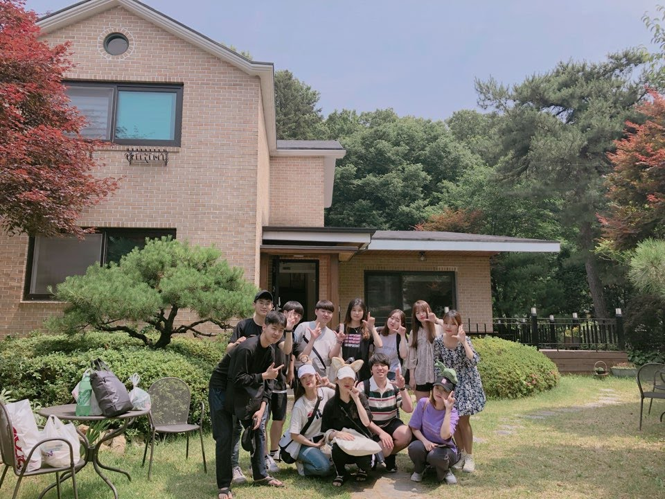

멋쟁이 사자처럼이란?
멋쟁이 사자처럼은 전국구 대학생 웹프로그래밍 동아리입니다. 비전공자와 전공자를 가리지 않고 HTML과 CSS의 기초부터 시작해서 1년 간의 학습과 활동을 함께하며 자신만의 서비스를 기획하고 다른 학생들과 협업을 통해 이러한 서비스를 실제 코드로 구현해내고 서비스하는 것에 목적을 두고 있습니다. 멋쟁이 사자처럼과 함께 당신의 세상을 더 살기 좋은 곳으로 바꿔보는건 어떨까요?
멋쟁이 사자처럼의 대표, 프로그래머 이두희!
멋쟁이사자처럼 공식 웹페이지(클릭)
▶ 7기 운영진 소개
 김지수, 응용컴퓨터공학
안녕하세요 응용컴퓨터공학과 16학번 김지수입니다! 2018년도 부터 멋사와 함께하고 있어요. 작년에 웹페이지 제작부터 정말 좋은 인연까지 잊지못할 추억을 만들었어요! 웹페이지 제작이라고 해서 어려울 것 같지만 어렵지 않아요! 어떤 분야로 나아갈까 고민하는 저에게 멋사는 방향을 제시해주는 나침반 같은 역할이였어요. 아이디어를 내손으로 실현시키고 싶다 하시는 분들과 함께하고 싶어요. 이번해 저희와 함께 좋은추억을 만들어 보아요 :D
김지수, 응용컴퓨터공학
안녕하세요 응용컴퓨터공학과 16학번 김지수입니다! 2018년도 부터 멋사와 함께하고 있어요. 작년에 웹페이지 제작부터 정말 좋은 인연까지 잊지못할 추억을 만들었어요! 웹페이지 제작이라고 해서 어려울 것 같지만 어렵지 않아요! 어떤 분야로 나아갈까 고민하는 저에게 멋사는 방향을 제시해주는 나침반 같은 역할이였어요. 아이디어를 내손으로 실현시키고 싶다 하시는 분들과 함께하고 싶어요. 이번해 저희와 함께 좋은추억을 만들어 보아요 :D
이동규, 국제경영학
안녕하세요! 국제경영학과 13학번 이동규입니다. 비전공자로 웹 프로그래밍을 공부한지 2년 째가 되었고 현재는 프론트엔드 개발자로 취업을 준비하고 있어요. 학교에서 뚜렷한 목표를 찾지 못하고 방황하던 저에게 멋쟁이 사자처럼은 새로운 이정표가 되어 준 고마운 곳 입니다. 6기의 운영진들 덕분에 웹 프로그래밍을 재미있게 배우면서 좋은 결과를 만들고 개발자에 대한 꿈도 키워 나갈 수 있었던 만큼 제가 운영진으로 활동하게 된 이번 7기에서도 여러분들과 함께 단국대 멋쟁이 사자처럼에서 정말 재미있고 인생에 한번뿐인 좋은 시간들을 만들 수 있도록 노력하겠습니다.
김재훈, 응용컴퓨터공학
안녕하십니까 이번에 멋쟁이 사자처럼 운영진을 맡게 된 응용컴퓨터공학과 김재훈입니다! 여러분의 눈높이에서 쉽고 재미있게 프로그래밍을 가르쳐 드리기 위해서 열심히 공부중이니까 많은 분들의 지원 바라구요 같이 재미있고 보람찬 2019년을 보냈으면 좋겠습니다 단국대 멋쟁이 사자처럼 7기 화이팅! 새롭고 재미있는 웹 개발이 여러분을 기다리고 있으니까 마음 편하게 지원해주세요 여러분을 해치지 않는 착하고 재미있는 사람과 활동들이 여러분을 기다립니다 - 지원, 지원! We Need You!
이채연, 경영학
안녕하세요~멋사 운영진을 맡게 된 경영학과 이채연입니다. 제 전공과는 무관했던 내용이라 어려움도 많았지만 전 기수 운영진 덕분에 코딩으로 웹페이지를 구현할 수 있게 되었습니다. 멋사에 오신다면 코딩에 대해 전혀 모르더라도 저처럼 아이디어를 구현해 볼 수 있습니다! 많이 도와드리고 알려드릴게요~ 올 한해 같이 멋사로 함께해요~~♡ 소모임도 자주 가지고 친하게 지내보아요!
김지현, 소프트웨어
안녕하세요 소프트웨어학과 17학번 김지현입니다! 작년에 멋쟁이 사자처럼 6기 활동을 하게 되면서 팀원들과 함께 아이디어를 고민하고 직접 웹 페이지를 만들어 가는 과정에서 여러가지로 배울 수 있는 점이 정말 많았던 것 같아요! 올해에도 멋쟁이 사자처럼 7기 분들과 함께 배우고 소통하며 좋은 경험들을 많이 쌓고 싶습니다! 많은 지원 바랍니다^^
▶ 2018년의 단국대 멋쟁이 사자처럼



단국대 멋쟁이 사자처럼은 모의수강신청, 단국대 축제 관련 정보제공, 버스시간 알림, 멘토멘티 매칭 서비스, 노트북 추천 서비스, 커플다툼 해결사 프로젝트 등 주로 단국대학교 교내를 타겟으로 한 재미있고 다양한 서비스를 개발하고 서비스했습니다. 더 멋진 아이디어로 주변 친구들과 단국대학교, 세상을 깜짝 놀라게 만들 서비스를 같이 만들어보아요!
여러분도 할 수 있습니다!
단국대 멋쟁이 사자처럼에서는 웹 서비스 개발과 관련된 기획, 디자인, 프로그래밍 모두를 함께 배우고 직접 프로젝트에 적용해보는 기회를 가질 수 있습니다. 웹에 관심이 있고 팀을 이루어 무언가를 만들어보고 싶고 무언가 열심히 할 수 있는 열정과 시간을 가진 여러분을 환영합니다.
세상을 바꿀 열정을 가진 당신, 지금 바로 단국대 멋쟁이 사자처럼 7기에 지원하세요!
세상을 바꿀 열정을 가진 당신, 지금 바로 단국대 멋쟁이 사자처럼 7기에 지원하세요!
지원하기
단국대 멋사의 여태까지의 활동과 앞으로의 소식이 궁금하시다면 ->
facebook.com/likeliondku(클릭)
카카오톡 플러스친구: @likeliondku
단국대 멋쟁이 사자처럼 6기 홈페이지 구경하기(클릭)
카카오톡 플러스친구: @likeliondku
단국대 멋쟁이 사자처럼 6기 홈페이지 구경하기(클릭)